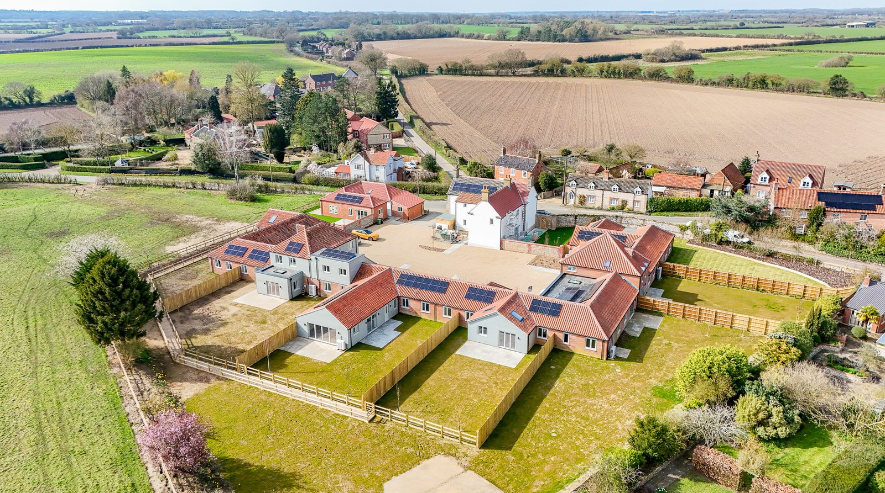
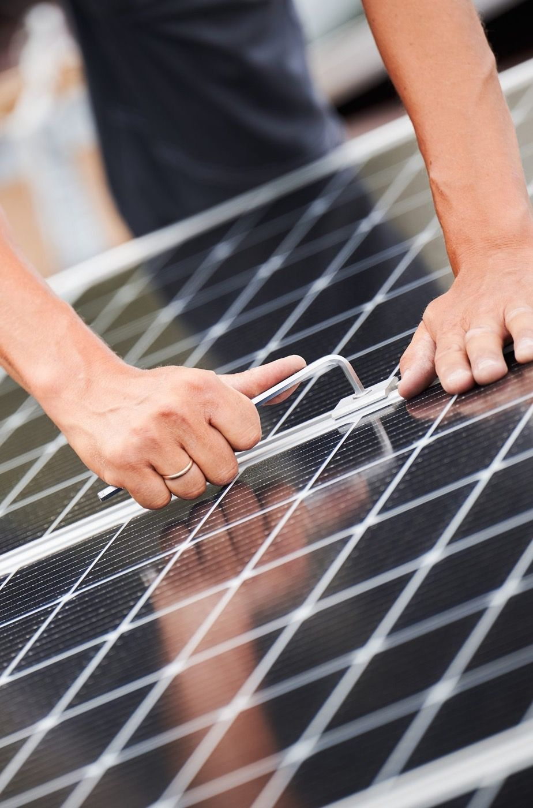
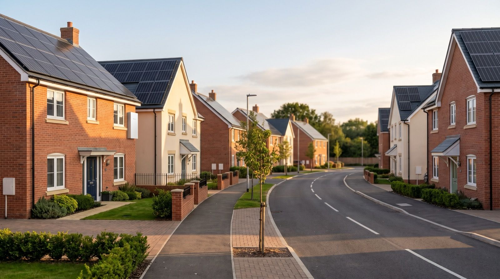
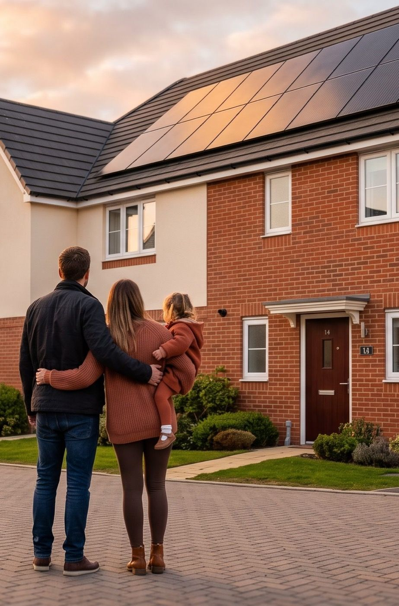

Summary
Zero In Developments partnered with Gryd on Lower Farm Mews, a 9-home conversion in Tittleshall, Norfolk. With rising costs squeezing margins, ZID risked scaling back their sustainability ambitions. Gryd provided ~£100,000 of fully-funded solar and battery hardware at zero cost, upgrading every home from ~20% to ~70% energy coverage with 10 kWh battery storage. The result: EPC A-rated homes with £30,000–£40,000 in estimated lifetime energy savings and flexible buyer options — subscribe or buy outright.
Key Details
Developer: Zero In Developments (ZID)
Project: Lower Farm Mews, Tittleshall, Norfolk
Type: Conversion — 9 residential units (3 & 4-bed homes)
Gryd hardware value: ~£100,000
Battery storage per home: 10 kWh
Energy coverage uplift: ~20% → ~70%
EPC rating achieved: A
Installer: Array Electrics
Key Outcomes
- Zero additional build cost for solar and battery
- Higher sustainability credentials for marketing
- EPC A rating across all units
- Stronger sales proposition for buyers
- Ongoing support from site assessment to commissioning
The Developer
Zero In Developments (ZID) is a privately owned property development company based in the South East of England, focused on delivering sustainable, low-carbon homes that are built for the future. Founded by Sam Fryer and Jed Jordan, ZID specialises in finding disused commercial and light-industrial buildings and converting them into high-quality residential homes — reusing and restoring existing structures to minimise embodied carbon.
Sustainability is not an afterthought for ZID — it is the priority. Their approach combines a fabric-first design philosophy with efficient systems and on-site renewables, targeting reduced whole-lifecycle emissions across every project.
Our ambition from day one has been to deliver homes that are genuinely built for the future — not just ticking a box on sustainability, but setting a new standard for what responsible development looks like. Sam Fryer, Director & Co-Founder, Zero In Developments
The Project

Lower Farm Mews is a private development of nine 3 and 4-bedroom homes in the village of Tittleshall, Norfolk. The site is a conversion of the former Courtenay House — a disused care home — where the shell of the original building was retained and the internals were completely renovated and reconfigured into modern, energy-efficient residences.
True to ZID’s ethos, the project was designed to deliver low-carbon, all-electric homes featuring air-source heat pumps, EV charging points, and repurposed building materials. Solar energy was always part of the plan.
We’d set out to build the most sustainable homes we could, but the numbers were forcing us into compromises we really didn’t want to make. We were looking at delivering a good product, but not the exceptional one we’d promised ourselves and our buyers. Jed Jordan, Director & Co-Founder, Zero In Developments
The Solution
Initial engagement and site assessment
ZID contacted Gryd to explore how a fully-funded solar and battery model could support the project. Gryd conducted an initial site assessment to determine the optimal system configuration for each of the nine plots and to model the energy performance and financial benefit for future homeowners.
The results were compelling. Gryd could deliver significantly better energy performance than had previously been planned — without adding any cost to the project.
Late-stage integration
Typically, Gryd engages with a project at an early design stage so that solar and battery can be incorporated as a core component of the design. In this case, ZID had already contracted a solar installer based on a previous design, and works were only weeks away from starting on site.
Rather than disrupt the programme, Gryd worked closely with ZID and their appointed installer, Array Electrics, to redesign the system specification and plan delivery around the existing schedule.
From solar-only to solar + battery



The original plan was a modest solar-only configuration. With Gryd’s fully-funded model, the project was upgraded to include:
- 10 kWh of battery storage in every home — previously written off as unaffordable
- An increased number of solar panels per plot — optimised to each roof’s orientation and capacity
- Smart monitoring and control — enabling real-time performance tracking and energy management
The total value of solar and battery hardware provided by Gryd across the site was approximately £100,000 — delivered at zero cost to the developer.
When we saw what Gryd could deliver, it was a no-brainer. We went from a system that might cover 20% of a home’s energy needs to one that delivers up to 70% — and we didn’t have to spend a single extra pound to get there. That’s a game-changer for any developer watching their margins.
Navigating Complexity
Contractor insolvency
The project experienced a significant setback when the main contractor went into administration — an event that nearly killed the project entirely. Through quick thinking, Sam and Jed took the decision to acquire the contractor and retain the workforce, allowing the project to continue with only a brief pause.
Throughout this difficult period, Gryd maintained its commitment to the site, working flexibly around the disruption to ensure ZID didn’t have to sacrifice their sustainability goals.
Grid connection delays
A common but often underestimated challenge in construction is securing the grid connection — essential for commissioning any solar and battery system. After a prolonged period of uncertainty around the connection date, Gryd connected directly with the DNO (Distribution Network Operator) responsible for the works to push the connection through. This two-sided approach — both Gryd and ZID applying pressure — undoubtedly brought the connection date forward.
Remote connectivity
An unexpected challenge arose from the site’s rural location in Norfolk. Gryd’s systems require a data connection for real-time monitoring and performance management, typically achieved through a small mobile router installed alongside each system. However, Lower Farm Mews sits in a mobile data black spot.
The team found a pragmatic interim solution: connecting systems to the construction team’s existing broadband where in range. Once homes are sold and occupied, each system will transfer to the homeowner’s own broadband service — a seamless transition requiring no additional hardware.
The Impact
For the developer
- ~£100,000 of solar and battery hardware delivered at zero cost
- EPC A ratings awarded across all properties
- Higher sustainability credentials to market — exceeding original ambitions despite budget pressure
- A stronger sales proposition — homes that cost less to run, with a tangible technology story for buyers
- End-to-end support — from site assessment and system design through to commissioning and sign-off
For homeowners
- Up to ~70% of home’s energy generated and stored on-site (up from ~20% solar-only plan)
- 10 kWh battery storage enabling energy generated during the day to be used in the evening
- Flexible ownership options — buyers can choose to subscribe to the Gryd system with a fixed monthly fee, or buy outright
- Ongoing monitoring and maintenance with every Gryd subscription
- Estimated £30,000–£40,000 in lifetime energy saving s per home
Buyer response
The site is nearing completion, with one property already sold and occupied, and a further two reserved. The flexibility of Gryd’s model is already proving its value:
- One buyer opted to purchase the system outright, planning to live in the home long-term and wanting the maximum their financial benefit.
- Two buyers chose to subscribe, already at their maximum mortgage threshold and preferring the certainty of a fixed, low monthly payment without the upfront cost.
What Sets Gryd Apart
Gryd funds the hardware. The developer pays nothing. Solar panels, batteries, inverters, and smart monitoring — all provided, installed, and maintained through Gryd’s SPV-funded model. Developers get best-in-class energy systems on every home without impacting build budgets.
This project demonstrates what makes Gryd different:
- Zero capex for the developer — no impact on build cost or project margin
- Late-stage flexibility — Gryd integrated with an existing programme and installer, weeks before works were due to start
- Hands-on project support — from DNO engagement and system design to on-site sign-off against strict quality standards
- Resilience through disruption — Gryd stayed committed through contractor insolvency and programme delays
- Buyer choice — homeowners can subscribe or buy, removing barriers to sale
Lower Farm Mews is a perfect example of what happens when a developer’s sustainability ambitions meet the right funding model. ZID had the vision — they just needed a partner who could remove the cost barrier without compromising on quality. That’s exactly what Gryd is built to do. We’re not a bolt-on at the end of a project. We become part of the team, working through the same challenges, and making sure every home is delivered with a system we’re proud to put our name on. Mohamed Gaafar, Co-Founder & CEO, Gryd